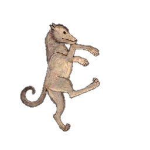

صور الكوكبات السماوية
"صور الكوكبات الشمالية"
الدب الأصغر

الدب الأكبر

التنين

الملتهب

العوّاء

الإكليل الشمالي

الجاثي

السلحفاة

الدجاجة

ذات الكرسي

حامل رأس الغول

ممسك الأعنة

الحوّاء و الحيّة

السهم

العقاب

الدلفين

قطعة الفرس

الفرس الأعظم

المرأة المسلسلة

المثلث

"صور الكوكبات الجنوبية"
قيطس

الجبار

النهر

الأرنب

الكلب الأكبر
الكلب الأصغر

السفينة

الشجاع

الباطية

الغراب

قنطورس و السبع

المجمرة

الإكليل الجنوبي

الحوت الجنوبي

"صور الأبراج الإثني عشر"
الحمل

الثور

التوأمان

السرطان

الأسد

العذراء

الميزان

العقرب

الرامي وهو القوس

الجدي

الدلو و هو ساكب الماء

الحوت

كوكبة السفينة
ذِكْر السفينة
قال ناظم الأرجوزة أبو علي الحسين بن عبدالرحمن الرازي، ابن الفلكي الشهير عبدالرحمن بن عمر الرازي المشهور بالصوفي:
-
وبعدها كواكب السفينةكواكبٌ زاهرة مبينة
-
يطلعن بعد مطلع الفرودوهن منهن غير مابعيد
-
نجومها كثيرة مشتبكةلها على قطب الجنوب حركة
-
فيهن نجمٌ حسنٌ لألاؤهيفوق ضوء المشتري ضياؤه
-
له ضيا يستبيح الليلاتدعوه أعراب الفلا سهيلا
-
وقد يسمى كوكب الخرقاءكما حكى مصنفو الأنواء
-
ماأن يرى في جهة الشمالوالبعض من مداين الجبال
-
ويجتلي لساكن الجنوبلقربه من قطبها المحجوب
صورة السفينة
وبعد طلوع نجوم الكلب الأكبر والأصغر تطلع نجوم كوكبة السفينة، وهي نجوم بعضها نيِّر تطلع بعد الفرود والعذارى وليست ببعيدة منها. ونجوم السفينة كثيرة ومتقاربة وتدور قريبا من قطب الجنوب، حيث يكون طلوعها من الجنوب الشرقي ولاترتفع في الأفق كثيراً ثم تغيب في الجنوب الغربي.

سهيل
ومن نجوم السفينة، نجم لامع يتلألأ لأنه لا يبتعد كثيراً عن الأفق، ولمعانه يفوق لمعان المشتري. وهذا النجم يسمّيه العرب سهيلاً. كما أنه يسمّى كوكب الخرقاء. وتسمية كوكب الخرقاء أتت من كون طلوعه علامة لنهاية الحر وقرب البرد، والخرقاء هي المرأة قليلة التدبير التي كانت تلهو في الصيف وأضاعت وقتها ولم تغزل للشتاء، فلمّا طلع سهيل وقرب الشتاء طلبت من الناس غزلا فلم تعط، فسمّي سهيل بكوكب الخرقاء.
وسهيل لايرى في الأقطار الشمالية، ولكنه يتبين بجلاء لأهل الأقطار الجنوبية، لقربه من قطب الجنوب المحجوب عن أهل الشمال. وحين أدرك الموت مالك بن الريب في خراسان وهي من الأقطار الشمالية، تشوق لمواطن العرب، وعبر عن ذلك بتمنّيه لرؤية سهيل:

النجوم الملحقة بسهيل
لم يذكر الراجز أي اسم آخر غير سهيل في هذه الكوكبة، وقد ذكر أبوه عدة أسماء لنجوم تلحق بسهيل ولكن لم يعيِّن أياً منها، وهي سهيل حضارِ وسهيل الوزن وسهيل رقاشِ. ووردت أسماء أخرى عند ابن قتيبة والمرزوقي مثل بلقين وسهيل بلقين. وهذه محاولة لتعيين هذه النجوم مما نستطيع التعرف عليه من وصفها ومن بعض البحوث السابقة ومن مخطوطة وجدتها في جامعة الملك سعود.
بلقين
يقول ابن قتيبة عن سهيل اليماني "هذا يقال له سهيل اليمن، ومعه نجم يقال له بلقين"، ولقد وجدت أن أقرب النجوم اللامعة لسهيل هو النجم τ_Pup، ولمعانه 2.9 ويبعد عن سهيل أربع درجات ونصف ويطلع معه تقريباً. من ذلك ربما كان هذا النجم هو بلقين.
سهيل بلقين
يقول المرزوقي "وروى ابن الأعرابي عن العرب في الكواكب اليمانية أشياء، قال سهيل اليمن وتحته سهيل بلقين وهو غير حضار وغير الوزن"، ومن ذلك يرى البروفيسور كونيتش أن سهيل بلقين هو α_Pic.
سهيل حضار
وجدت مخطوطة في جامعة الملك سعود مكتوبة بخط مؤلفها واسمه رمضان بن صالح السفطي وتاريخها 1144 هـ، وفيها يحدد أن سهيل حضارِ هو نيِّر فرش السفينة، وهو النجم رقم 17 من نجوم السفينة، وحسب ترقيم باير هو ζ_Pup. حضارِ ينُطق بكسرة على الراء في آخره.

سهيل الوزن
يحدِّد أيضاً السفطي في مخطوطته سهيل الوزن بأنه النيِّر الذي تحت فرش السفينة، وهو النجم رقم 35 من أنجم السفينة، وحسب ترقيم باير هو γ_Vel.
سهيل رقاش
ويحدِّد أيضاً السفطي في مخطوطته سهيل رقاشِ بأنه نيِّر السفينة، وهو النجم رقم 31 من أنجم السفينة، وحسب ترقيم باير هو λ_Vel. رقاشِ ينُطق بكسرة على الشين في آخره.


النجوم المشبهة بسهيل
ورد في التراث العربي القديم كلام عن نجمين يسمّيان حضار والوزن يشبهها الناس بسهيل فيخطئون ويظنون أنهما سهيل.
قال ابن قتيبة "وحضارِ والوزن كوكبان يطلعان قبل سهيل. تقول العرب: حضارِ والوزن محلفان". ثم شرح ابن قتيبة مقصود العرب بقولهم "محلفان" فقال "وذلك أنهما يطلعان قبله، فيظن الناس بكل واحد منهما أنه سهيل، ويتمارون حتى يحلف قوم أنه سهيل، ويحلف قوم أنه ليس به."
وقال المرزوقي "وفي مجرى سهيل كوكبان يقال لهما: حضار والوزن وهما يطلعان قبل سهيل ومن كلامهم حضار والوزن محلفان. ذلك أنه إذا طلع أحدهما فرآه الرائي قال لصاحبه: طلع سهيل فيقول صاحبه: ليس بسهيل فيتماريان حتى يحلفا، فلا بد من حنثِ أحدهما، وإذا كان الشيء يعرض فيه الشك كثيراً قيل: إنه لمحلف ومحنث."
وورد في كلام ابن قتيبة والمرزوقي أن حول حضارِ كواكب صغار تسمّى الفرود.
وفي لسان العرب في مادة حضر "وحَضَارِ، مبنية مؤنثة مجرورة أَبداً: اسم كوكب؛ قال ابن سيده: هو نجم يطلع قبل سُهَيْلٍ فتظن الناس به أَنه سهيل وهو أَحد المُحْلِفَيْنِ. الأَزهري: قال أَبو عمرو بن العلاء يقال طلعت حَضَارِ والوَزْنُ، وهما كوكبان يَطْلُعانِ قبل سهيل، فإِذا طلع أَحدهما ظن أَنه سهيل للشبه، وكذلك الوزن إذا طلع، وهما مُحْلِفانِ عند العرب، سميا مُحْلِفَيْنِ لاخْتِلافِ الناظرين لهما إذا طلعا، فيحلف أَحدهما أَنه سهيل ويحلف الآخر أَنه ليس بسهيل؛ وقال ثعلب: حَضَارِ نجم خَفِيٌّ في بُعْدٍ؛
وأَنشد:
الفُرُودُ: نجوم تخفى حول حَضَارِ؛ يريد أَن النار تخفى لبعدها كهذا النجم الذي يخفى في بعد."
وقال الصوفي في كتابه عن النجمين النيرين القريبين من نجوم الفرود، وهما النجم التاسع والعاشر من النجوم خارج صورة الكلب الأكبر، قال "وقد زعم قوم أيضاً أنها [أي العرب] تسمّي التاسع والعاشر النيّرين حضارِ والوزن وتسمّيهما المحلفين والمحنثين أيضاً، لأنهما يطلعان قبل سهيل فيقدر أن أحدهما سهيل، وفي ذلك غلط لأن سهيلاً كوكب نيّر عظيم في القدر الأول، منفرد لايجاوره شيء من الكواكب، وهذان هما في القدر الثالث فيما بين كواكب كثيرة، ويطلعان في وقت واحد، ويرتفعان عن الآفاق التي يرتفع فيها سهيل ارتفاعاً كثيراً فلا يشبِّهُهُما أحد بسهيل". والنجمان المقصودان بكلام الصوفي هنا هما α_Col و β_Col، وهو يخَطِّيء من قال أنّهما حضار والوزن لأنهما يرتفعان في السماء أكثر ولايشبهان سهيل في لمعانه وحولهما نجوم خافتة كثيرة.
وفي الكلام عن كوكبة قنطورس، قال الصوفي "وتسمي (أي العرب) الخامس والثلاثون الذي على طرف اليد اليمنى من الدابة وهو التالي من الإثنين النيرين اللذين في جنوب كوكبة قنطورس والسبع من القدر الأول مع السادس والثلاثين المتقدم للخامس والثلاثين من القدر الثاني من أعظمه وهو على ركبة اليد اليسرى من الدابة حضار والوزن، ويسميها محلفين و محنثين لأن المتقدم منهما خاصة يمر على مجرى سهيل أو قريب منه فإذا طلع أحدهما يشبه من يراه بسهيل فيدعي أنه سهيل ويراه غيره ويعرفه فيقول ليس بسهيل فيحالفان فيحنث المدعي أنه سهيل فسميا محلفين ومحنثين، ولاأدري أي منهما حضار وأيهما الوزن ويشبه أن يكون السادس والثلاثون المتقدم حضار لأنه يطلع قبل الخامس والثلاثين وهم يبتدؤنه بالحضار في تسميتها ثم بالوزن والله أعلم وأحكم."
خلاصة كلام الصوفي هنا أن المحلفين هما حضار والوزن وهما الخامس والثلاثون والسادس والثلاثون من صورة كوكبة قنطورس والسبع. وهذان النجمان هما: α_Cen و β_Cen
حضار و الوزن
وممّا سبق يتضح أن هناك نجمان يسميان حضار والوزن ويسمّيان أيضاً المحلفين والمحنثين، يطلعان قبل سهيل ويجريان في نفس مجراه، وكان بعض الناس إذا رأى أحد هذين النجمين يخطيء ويظنّه سهيلاً.
وهذا الكلام محيّر، لأنه في الواقع لايطلع قبل سهيل بمدة وجيزة أي نجم يشبهه وفي مجراه، وأقرب مايكون في الشبه له هو النجم الذي يسمّيه الناس المحلف وهو النجم α_Eri المسمّى قديماً الظليم، وطلوعه من المشرق يسبق طلوع سهيل بفترة تساوي الشهرين تقريباَ.
وقد ذهب الصوفي إلى أن حضار والوزن هما النجمان النيران الموجودان على يدي قنطورس، بينما استنتج البروفيسور كونيتش أن حضار والوزن هما النجمان القريبان من الفرود في كوكبة الكلب الأكبر.
المحلف
المحلف هو النجم α_Eri ويسمّى الظليم، وسمّاه المرزوقي المحنث وورد اسمه عند ابن ماجد في أراجيزه، وهو الذي يسمّيه بعض العامة سهيل الكذاب لشبهه بسهيل في اللمعان والمجرى. والذي يظهر لي أيضاً أنه هو محلف الجوزاء لأن طلوعه شرقا يوافق الجوزاء الأولى (الهقعة). ولو كان لي اجتهاد في مسألة حضار والوزن لقلت أنهما هما المحلف ونجم خافت حوله هو α_Hyi وذلك لشبههما بسهيل والنجم بلقين الذي هو τ_Pup.
سهيل في الشعر العربي
هذا قليل من كثير مما قيل في سهيل
قال الشاعر:
يقول أن سهيل يلوح كأنه لهق شبوب أي ثور أبيض مسن أبعدته الوحوش الضارية عن البقر وذلك لأن سهيل منفرد بلمعانه في بقعته بعيد عن غيره من النجوم اللامعة.
وقال الشاعر:
يقول أنظر إلى بريق سهيل كأنه يتلألأ وذلك لأنه لايرتفع عن الأفق كثيرا. وهو في ناحية عن مجرى النجوم الأخر لأن مجراه قريب من الجنوب ولايبتعد عنه.
وقال الشاعر:
وقال الشاعر:
والظاهر أن المعنى أن سهيل إذا عارض الشعرى ببقية تبقى من الليل، فهو الوقت الذي يترك فيه العرب المحاضر ويطلبون المنتجع وذلك في أول الوسم. وعند بداية الوسم تكون الشعرى فوق سهيل إلى الجنوب قبل الفجر.
سهيل و التقويم
كان سهيل علامة واضحة في طلوعه وحركته وغيابه واستخدمه العرب قديماً وحديثاً كالتقويم.
وقد رأينا قول ذي الرمة في تحديد الوسم بقوله:

وطلوع سهيل في المغرب هو وقت نتاج الأبل، وانتقالها من سن إلى سن. يقول الراجز:
أي إذا طلع سهيل من الشرق بعد غروب الشمس، فإن ابن اللبون يصبح حقاً والحق يصبح جذعاً، لأنه يكون مضى على ولادتها سنين تامة.
وفي التراث القريب قولهم عن نهاية الشتاء:
أي إذا كان سهيل تحت الشعرى مثل مكان الدلو من أعلى الرشا، وقت العشاء فإن هذا إيذان بنهاية الشتاء وبداية الربيع.

وقول الشاعر:
وقال الخلاوي
- الكلب الأصغر
إعداد قتيبة أقرع
- الشجاع